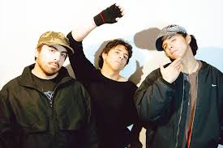

LATIN MAFIA
| TITULO | LETRA |
| FLORES | No sé qué pasa, te veo No se me pasa, te deseo Llevo tatuado tu aroma entero Mientras caminas yo te espero Y no, no, no lo creo Que bien tú y yo nos vemos Tú y yo nos vemos, yeah Te estoy esperando baby, dime dónde No lo pidas, llevo flores Mereces flores Te estoy esperando Perfuma mi cuerpo Y que luego te hable De lo que yo no cuento Te estoy esperando Perfuma mi cuerpo Y que luego te hable De lo que yo no cuento Te estoy esperando ho-hoy Quiero verte hoy Préstame tus besos Los devuelvo luego Sigo pensando qué flores llevar Dime dónde las paso a dejar Le llevo una flor a tu mamá Para agradecer que te vino a crear Solo quiero complacerla Que se sienta toda una reina Que yo me muero si me besa Le doy mi vida, si usted me deja Te estoy esperando baby, dime dónde Llevo flores, mereces flores Sé qué pasa, yeah No sé qué pasa, te veo No se me pasa, te deseo Llevo tatuado tu aroma entero, mientras caminas Te estoy esperando Perfuma mi cuerpo Y que luego te hable De lo que yo no cuento Te estoy esperando ho-hoy Quiero verte hoy Préstame tus besos Los devuelvo luego |
| CONTINUO ATARDECER | Continuo atardecer
Corre por su piel, yeah Sabe bien qué hacer Para verse bien Se arregla para ella misma Salió con todas sus amigas Ey, vestido corto que le queda bien Esa niña siempre luce bien Aprendió a sentirse siempre como un diez No le tiene miedo a lo que fue ayer Yeah y si le tiene miedo No importa, tiene tiempo pa' entenderlo Sus cicatrices se volvieron lienzos En cada herida se dio un beso El espejo la adora Siempre se ve mona Con su look de Barbie Pero es bien cabrona No le tiene miedo a lo que fue ayer No le tiene miedo a lo que fue ayer No le tiene miedo a lo que fue ayer No le tiene miedo a lo que fue ayer Continuo atardecer Corre por su piel Se arregla para ella misma Salió con todas sus amigas Continuo atardecer Corre por su piel Qué guapa se ve desde que se quiere tanto Sabe bien qué hacer Para verse bien Se arregla para ella misma Salió con todas sus amigas Ey, vestido corto que le queda bien Esa niña siempre luce bien Aprendió a sentirse siempre como un diez No le tiene miedo a lo que fue ayer Yeah y no le tengan miedo Pa' serte sincero Tú te ves tan bien luego Que me siento en el juego Qué guapa se ve desde que se quiere tanto |
| MALA BUENA SUERTE | ¿Por qué te levantas con miedo a ver que me encantas? Si anoche me abrazabas Tan sincero, que no había palabras Porque lo nuestro es aparte No hay comentarios ni llamadas entrantes Dime si yo empiezo a besarte O si solo escucho tu alma confesarse Y si tú a mí me llama', yo le llego Y aunque no tengo nada, te lo debo Vamos junto' a la luna, yo te llevo, eh-eh-eh-eh Y si tú a mí me llama', yo le llego Y aunque no tengo nada, te lo debo Vamos junto' a la luna, yo te llevo, eh-eh-eh-eh ¿Por qué te levantas con miedo a ver que me encantas? Si anoche me abrazabas Tan sincero que no había palabras Porque lo nuestro es aparte No hay comentarios ni llamadas entrantes Dime si yo empiezo a besarte O si solo escucho tu alma confesarse Tengo buena suerte De que viva en mi mente Para poder verte No hace falta verte Ay, qué mala suerte, eh De no poderte tenerte, eh 24-7, eh, eso no me divierte, eh Ey, bebé, no sé Ni siquiera te busqué Pero ya me encapriché Dime qué tengo que hacer Para, poder vibrar contigo, mujer Compartir la misma piel Y que nada salga bien ¿Por qué te levantas con miedo a ver que me encantas? Si anoche me abrazabas Tan sincero que no había palabras ¿Por qué te levantas? Ya, ya hasta ahí, wey |
| SE FUE LA LUZ | Se fue la luz
Se fue la luz Y yo alcanzo a ver sus ojos en mi reflejo Se fue la luz Se fue la luz Y me está cantando canciones en el pecho Pensando a quien le voy a robar su cenicero Dice que fuma solo porque se ve cuero Porque se ve cuero, porque se ve cuero Dice que fuma solo porque se ve cuero Manejando un Corvette del 78 Le dije: ¿Estás lista? Que pasó en 8 Le gusta el estilo de este morocho Me faltan 6 años pa' los 28 Y toda una vida pa' ser vistoso (No hay luz y te veo, eso es sospechoso) (Que me tiene mal) Pensando cómo decirle que me tiene bellaco, ey Me tiene hablando como si yo fuera todo un pajarraco Yo no suelo hablar, no sé de dónde saco tanto, ey Pensando en decirle que le estoy rezando, ey No se la estoy asustando, ey ¿Cómo decirte que te amo? (¿Qué?) Pensando en coordenadas Ni sé dónde va a ser Pero no importa nada, en la obscuridad nos vamos a perder Quién soy, ya ni recordaba Hasta que vi la eternidad en tu mirada Es que la oscuridad, por Dios, todo se siente Es como que ya te conozco de repente Se fue la luz Se fue la luz Y me está cantando canciones en el pecho Pensando a quien le voy a robar su cenicero Dice que fuma solo porque se ve cuero (si no estás tú, no entiendo nada) Porque se ve cuero (pero quisiera entenderlo) Porque se ve cuero (suena bien entretenernos) No sé qué pasa Por tu cabeza Cuando me hablas Y no me besas Mami, no sé como te suena Tú y yo, los niños a la escuela (Se fue la) Se fue la luz Se fue la luz Y me está cantando canciones en el pecho Pensando a quien le voy a robar su cenicero Dice que fuma solo porque se ve cuero (si no estás tú, no entiendo nada) Porque se ve cuero (pero quisiera entenderlo) Porque se ve cuero (suena bien entretenernos) |
| 2:12 | Oh-oh, son las 2:12 Ya-ya-ya-ya estoy solito esperándote Encontré un lugar que nadie nos ve Mientra' la fiesta siga, nos podemo' comer Esta complicidad de mi boca y tu piel Aunque lo expliquemos, no lo van a entender Cuando meno' la pienso, vuelve a aparecer Ma', yo lo intento, pero no lo puedo evitar Cuando meno' la pienso, vuelve a aparecer Ya sé que no ere' mía, pero yo te quiero tocar Lo que pasó fue que me enamoré De la que no se debe, ¿y si nos dejamo' ver? Muchos problema' vienen, ¿pero qué más da? (¿Qué más da?) Fue lo que tomamos o fue el invierno Usamo' de excusa pa' calentar nuestro' cuerpo' Hay razones de más, ¿por qué me alejé? No hay un segundo que no piense en usted (yo, sí, te quiero) Esta complicidad de mi boca y tu piel Aunque lo expliquemos, no lo van a entender Uh-uh-uh, uh-uh Uh-uh-uh-uh-uh Uh-uh-uh-uh-uh Te vuelvo a tener, amémosno' Un mundo perfecto, inventémoslo y ven Ven y bésame la boca Que las horas solo son pocas (uh-uh-uh) Ven y bésame la boca Donde tus labios mejor pertenecen Se me queda en la mente tú en aquella' pose' No la volví a ver después de las 2:12 Puse de excusa el drama con tu novio aquel ¿O fue que de enamorarme otra ve' me asusté? Hay razone' de má', ¿por qué me alejé? No hay un segundo que no piense en usted (yo, sí, te quiero) Esta complicidad de mi boca y tu piel Aunque lo expliquemos, no lo van a entender (entender, entender, -der, -der) Uh-uh-uh Uh-uh-uh-uh Uh-uh-uh Cuando meno' la pienso, vuelve a aparecer Ma', yo lo intento, pero no lo puedo evitar Cuando meno' la pienso, vuelve a aparecer Ya sé que no ere' mía, pero yo te quiero tocar (uh-uh) Uh-uh-uh-uh-uh |